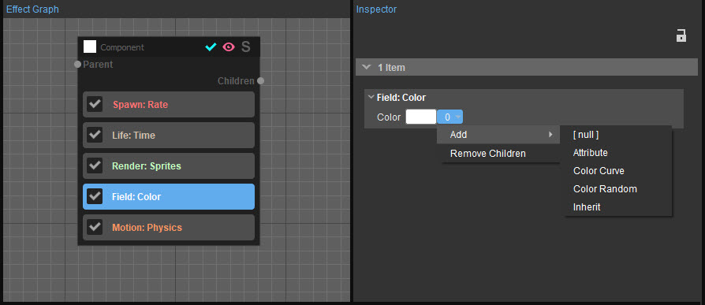

Обзор
Модификаторы цвета — это специальные модификаторы, которые можно найти и доступны только на Поле: Цвет функция.
Следующие функции можно найти в категории «Модификатор цвета»:

Дополнительную информацию о цветах см. Поле.
Дополнительную информацию о модификаторах см. Модификаторы страница.
Цвета от разных модификаторов всегда комбинируются с помощью многократного смешивания.
Атрибут
Этот модификатор может читать значение любого атрибута, доступного в эмиттере. Это один из наиболее важных модификаторов цвета, поскольку он позволяет атрибутам фактически управлять тоном эффекта.
| Свойства | Описание |
|---|---|
Имя атрибута | Определяет имя атрибута. Если атрибут не существует в этом эмиттере, модификаторы будут белыми. |
Масштаб и смещение | Позволяет масштабировать и смещать цвет атрибута в зависимости от значений этих свойств. |
Гамма | Регулирует уровни атрибута. Указывает, насколько яркими должны быть среднесерые цвета, но без изменения уровней белого и черного. |
Только появление | Позволяет применять цвет атрибута к новорожденным частицам. |
Цветовая кривая
Этот модификатор является модификатором, основанным на функции; для получения дополнительной информации, пожалуйста, обратитесь к Общие настройки модификаторов на основе функций.
Цветовая кривая использует вход источника времени для выборки кривой Безье для каждого цветового канала. В системе эффектов частиц кривые Безье имеют неограниченное количество точек. Каждая точка должна находиться в диапазоне от 0 до 1 по оси X; но жестких ограничений по оси Y нет. Из соображений производительности точки Безье поддерживают уклоны, но не вес уклона.
С этим модификатором к объекту не добавляются никакие дополнительные свойства; используются только свойства, основанные на функциях, а цветовой градиент основан на кривых Безье.
Цвет случайный
Этот модификатор эквивалентен Случайный модификатор, но он выводит случайный цвет. Дополнительную информацию о модификаторе Random можно найти в разделе Модификаторы раздел.
Свойства | Описание |
|---|---|
Яркость | Определяет величину изменения яркости (яркости), добавляемую к частице. |
RGB | Определяет величину отклонения насыщенности цвета, добавляемую к частице. При значении 0 все частицы будут выглядеть белыми, при значении 1 все частицы будут иметь полностью насыщенный случайный цвет. |
Наследовать
Эта опция позволяет дочерним частицам наследовать цвет родительских частиц.
Свойства | Описание |
|---|---|
Только появление | Наследует родительский цвет при рождении частицы. |
GPU Поддержка
В настоящее время поддержка модификаторов цвета в GPU ограничена. Единственное значение цвета, которое можно изменить на GPU, — это значение цвета Поле: Цвет. Цветовую кривую можно использовать только тогда и только тогда, когда Я time-source — это основной источник свойств, из которого можно получить значение. Пожалуйста, обратитесь к Общие настройки модификаторов на основе функций для получения дополнительной информации о Я вариант источника времени.